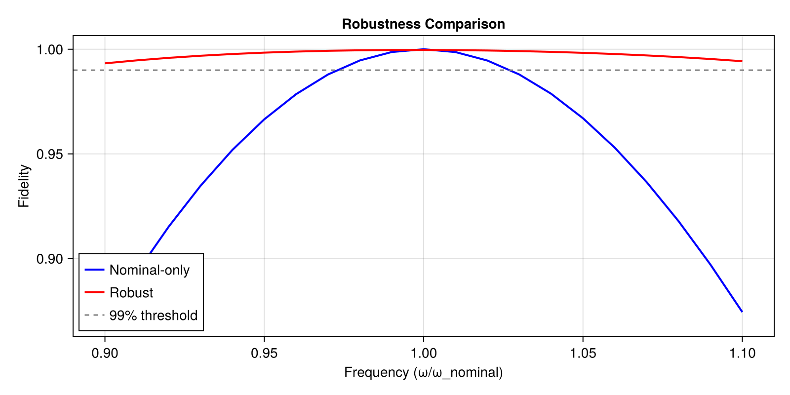

Robust Control
This tutorial shows how to design control pulses that are robust to parameter uncertainty using SamplingProblem.
The Problem
Real quantum systems have parameter uncertainty:
- Qubit frequencies drift over time
- Fabrication variations between devices
- Calibration errors
A pulse optimized for nominal parameters may perform poorly when parameters vary. SamplingProblem optimizes for multiple parameter values simultaneously.
using Piccolo
using CairoMakie
using Random
Random.seed!(456)Random.TaskLocalRNG()Setup: Nominal System
# Nominal qubit frequency
ω_nominal = 0.5
H_drift = ω_nominal * PAULIS[:Z]
H_drives = [PAULIS[:X], PAULIS[:Y]]
drive_bounds = [1.0, 1.0]
sys_nominal = QuantumSystem(H_drift, H_drives, drive_bounds)
# Time parameters
T, N = 10.0, 100
times = collect(range(0, T, length = N))
# Target gate
U_goal = GATES[:X]2×2 Matrix{ComplexF64}:
0.0+0.0im 1.0+0.0im
1.0+0.0im 0.0+0.0imStep 1: Optimize for Nominal Parameters Only
pulse_nom = ZeroOrderPulse(0.1 * randn(2, N), times)
qtraj_nom = UnitaryTrajectory(sys_nominal, pulse_nom, U_goal)
qcp_nom = SmoothPulseProblem(qtraj_nom, N; Q = 100.0, R = 1e-2)
solve!(qcp_nom; max_iter = 20, verbose = false, print_level = 1)
fidelity(qcp_nom)0.9999987768803295Step 2: Test Robustness
Let's see how this pulse performs with ±10% frequency variation:
function evaluate_fidelity(qcp, ω_test)
# Create test system with different frequency
H_test = ω_test * PAULIS[:Z]
sys_test = QuantumSystem(H_test, H_drives, drive_bounds)
# Get optimized pulse
pulse_opt = get_pulse(qcp.qtraj)
# Create trajectory and evaluate
qtraj_test = UnitaryTrajectory(sys_test, pulse_opt, U_goal)
return fidelity(qtraj_test)
end
# Test across frequency range
ω_range = range(0.9 * ω_nominal, 1.1 * ω_nominal, length = 21)
fidelities_nom = [evaluate_fidelity(qcp_nom, ω) for ω in ω_range]
extrema(fidelities_nom)(0.8691605939610197, 0.9999987768803295)Step 3: Robust Optimization with SamplingProblem
Now let's optimize for multiple frequency values simultaneously.
# Create perturbed systems (±5% and ±10%)
ω_samples = [0.9, 0.95, 1.0, 1.05, 1.1] .* ω_nominal
systems = [QuantumSystem(ω * PAULIS[:Z], H_drives, drive_bounds) for ω in ω_samples]
# Optimize for all frequency samples
# Start from the nominal solution
qcp_robust = SamplingProblem(qcp_nom, systems; Q = 100.0)
solve!(
qcp_robust;
max_iter = 20,
verbose = false,
print_level = 1,
)
fidelity(qcp_robust)5-element Vector{Float64}:
0.9932701554673993
0.998376638200543
0.9996516994209664
0.9982833218926
0.9942816743681552Step 4: Compare Performance
# Evaluate robust pulse
fidelities_robust = Float64[]
for ω in ω_range
H_test = ω * PAULIS[:Z]
sys_test = QuantumSystem(H_test, H_drives, drive_bounds)
pulse_robust = get_pulse(qcp_robust.qtraj)
qtraj_test = UnitaryTrajectory(sys_test, pulse_robust, U_goal)
push!(fidelities_robust, fidelity(qtraj_test))
end
extrema(fidelities_robust)(0.9932701554673993, 0.9996516994209664)Step 5: Visualize Comparison
fig = Figure(size = (800, 400))
ax = Axis(
fig[1, 1],
xlabel = "Frequency (ω/ω_nominal)",
ylabel = "Fidelity",
title = "Robustness Comparison",
)
lines!(
ax,
ω_range ./ ω_nominal,
fidelities_nom,
label = "Nominal-only",
linewidth = 2,
color = :blue,
)
lines!(
ax,
ω_range ./ ω_nominal,
fidelities_robust,
label = "Robust",
linewidth = 2,
color = :red,
)
hlines!(ax, [0.99], linestyle = :dash, color = :gray, label = "99% threshold")
axislegend(ax, position = :lb)
fig
Step 6: Combine with Time Optimization
We can chain SamplingProblem with MinimumTimeProblem for robust AND time-optimal pulses.
# First, create base problem with free time
pulse_free = ZeroOrderPulse(0.1 * randn(2, N), times)
qtraj_free = UnitaryTrajectory(sys_nominal, pulse_free, U_goal)
qcp_free = SmoothPulseProblem(
qtraj_free,
N;
Q = 100.0,
R = 1e-2,
Δt_bounds = (0.05, 0.3), # Enable variable timesteps
)
solve!(qcp_free; max_iter = 15, verbose = false, print_level = 1)
# Add robustness
qcp_robust_free = SamplingProblem(qcp_free, systems; Q = 100.0)
solve!(
qcp_robust_free;
max_iter = 15,
verbose = false,
print_level = 1,
)
# Minimize time while maintaining fidelity
qcp_fast_robust = MinimumTimeProblem(qcp_robust_free; final_fidelity = 0.95, D = 100.0)
solve!(
qcp_fast_robust;
max_iter = 15,
verbose = false,
print_level = 1,
)
# Compare durations
duration_initial = sum(get_timesteps(get_trajectory(qcp_free)))
duration_robust = sum(get_timesteps(get_trajectory(qcp_robust_free)))
duration_fast = sum(get_timesteps(get_trajectory(qcp_fast_robust)))
duration_initial, duration_robust, duration_fast(10.389225839437566, 9.639544722323116, 8.325470883383534)Weighted Sampling
You can weight some parameter values more heavily:
# More weight on nominal, less on extremes
weights = [0.5, 1.0, 2.0, 1.0, 0.5] # Emphasize nominal
qcp_weighted = SamplingProblem(qcp_nom, systems; weights = weights, Q = 100.0)
solve!(
qcp_weighted;
max_iter = 15,
verbose = false,
print_level = 1,
)
# Evaluate
fidelities_weighted = Float64[]
for ω in ω_range
H_test = ω * PAULIS[:Z]
sys_test = QuantumSystem(H_test, H_drives, drive_bounds)
pulse_w = get_pulse(qcp_weighted.qtraj)
qtraj_test = UnitaryTrajectory(sys_test, pulse_w, U_goal)
push!(fidelities_weighted, fidelity(qtraj_test))
end
extrema(fidelities_weighted)(0.9995502665036008, 0.9999928563132822)Best Practices
- Start with nominal optimization - Get a working solution first
- Sample key parameters - Focus on parameters with most uncertainty
- Use 3-5 samples initially - More samples = slower optimization
- Verify with dense evaluation - Test on more points than you optimized for
- Balance robustness and performance - More robust often means longer gates
Next Steps
- Problem Templates: Full
SamplingProblemdocumentation - MinimumTimeProblem: Time optimization details
- Composing Templates: Advanced composition patterns
This page was generated using Literate.jl.